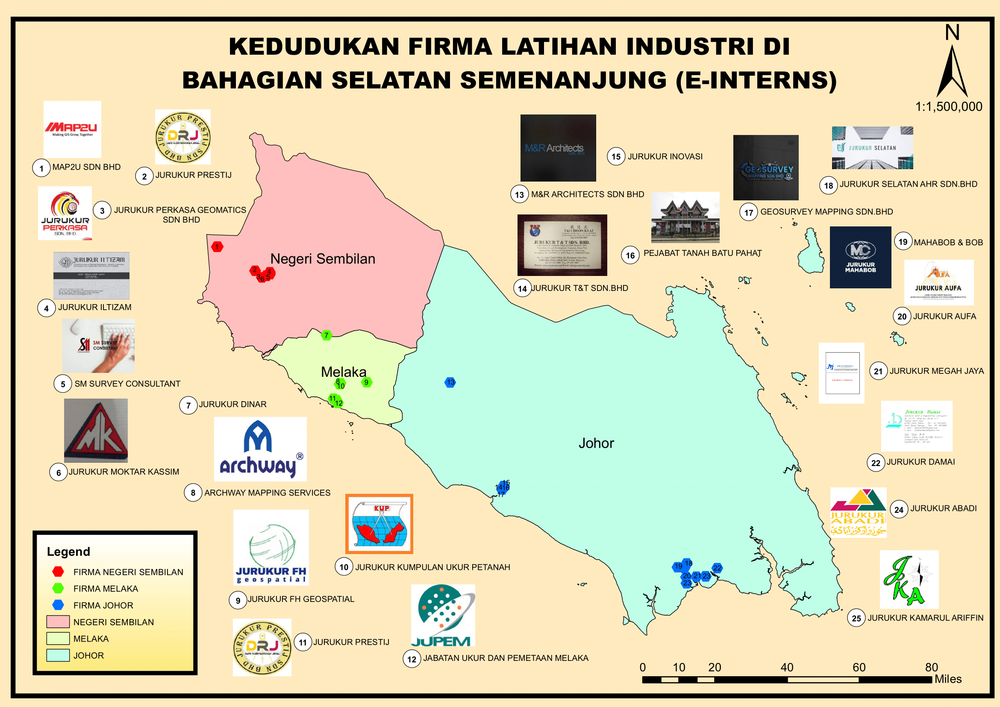

Home
map

JURUKUR PRESTIJ
JURUKUR ILTIZAM
JURUKUR MOKHTAR KASSIM
PERKASA GEOMATICS SDN.BHD
SM SURVEY CONSULTANT
MAP2U SDN BHD
JURUKUR DINAR
JURUKUR PRESTIJ
JABATAN UKUR DAN PEMETAAN MELAKA
ARCHWAY MAPPING SERVICES SDN BHD
JURUKUR KUMPULAN UKUR PETANAH (LS) SDN BHD
JURUKUR FH GEOSPATIAL
M&R ARCHITECTS SDN BHD
JURUKUR DAMAI
JURUKUR INOVASI
JURUKUR T&T SDN. BHD
GEOSURVEY MAPPING SDN. BHDM
PEJABAT TANAH BATU PAHAT
JURUKUR SELATAN AHR SDN BHD
MAHABOB & CO
JURUKUR AUFA
JURUKUR MEGAH JAYA
JURUKUR ABADI
JURUKUR KAMARUL ARIFFIN
x